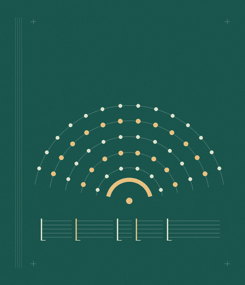
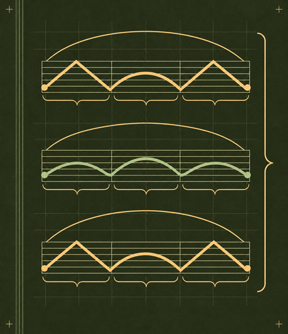
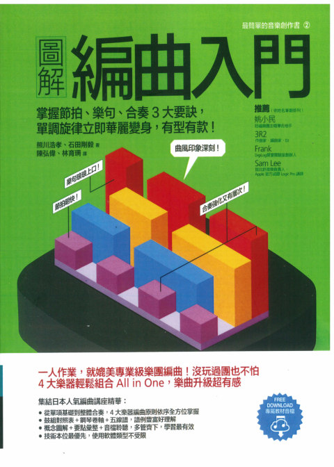

乐理教程
设置
主题配色
纸白
米浆
雾蓝
淡紫
烟粉
薄荷
琥珀
石墨
午夜蓝
全部教材
程序谱
→
16 章
基本乐理教程
时值、节拍、音高、调式、和弦与演奏记号。
→
第 1–23 章
和声学基础教程
上册
四部写作、大小调和声与五声调式。
→
第 24–44 章
和声学基础教程
下册
离调、声部加饰、变和弦与远关系转调。
→
上、下篇 · 19 章
复调音乐基础教程
对位、模仿、卡农、创意曲、赋格与支声复调。
→

第 1–7 章
配器法基础教程
乐队总谱、弦乐、管乐与打击乐的配置。
→

19 章
曲式学基础教程
乐段、回旋、变奏、奏鸣曲式与声乐套曲。
→
17 章
歌曲写作教程
主题乐句、旋律发展、歌曲结构与词曲结合。
→

导论与 3 篇
图解编曲入门
流行乐队的节拍骨架、可哼唱乐句与合奏编配。
→